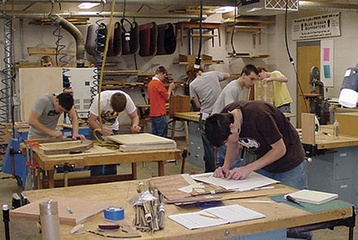

I wanted to become a teacher because I found a great sense of joy when I was able to help others and see them improve.
Becoming a teacher is a journey of continual education which is why I will strive to improve my craft and become the best teacher I can be.
This career path can be demanding, which is a part of why I love it, having to differentiate think on your feet and manage behaviour all at once can create a lot of pressure, but they are also the most thrilling moments.
Teaching Portfolio
About me
Hi, my name is Patrick Lee and I'm currently completing my Bachelor of Education secondary and Bachelor of Arts technology at ACU.
While I am yet to complete my final practical I have been working as a TAS assistant/ SLSO at De La Salle,
for the past two years at this job I do workshop maintenance and prepare all of the practical lessons for students while also helping teachers monitor the class and educate.
I greatly enjoyed this job as it combines 2 of my favourite things being teaching and the woodwork subject area,
being able to watch students progressively grow their skills in practical applications is a highlight for the job.

I have a great passion for the practical subjects, woodwork, metal work and even art are my hobbies and pastimes.
I look at these avenues for passion as a chance to grow my own skills in being able to teach the subject areas.
By continuingly applying myself and learning about joinery and craftsmanship I can be a better more knowledgeable teacher that can support my students. As seen in this image I constantly have a project I'am working on to refine my own skill and continuingly learn.

The subject areas that I am trained in and will teach are very dangerous, the workshops have a multitude of hazards that could cause harm to the students which is why safety is one of the most important factors of my practise. Duty of care is important for all teachers however in my room I make considerable interventions to ensure all students have the lowest chance of getting harmed. In the timber/ metal subject area dangerous tools and processes are inevitable therefore extensive education on safety is a necessity along with a strict set of rules that focus on keeping students safe.
Thanks for reading
Please use the menu to find other pages